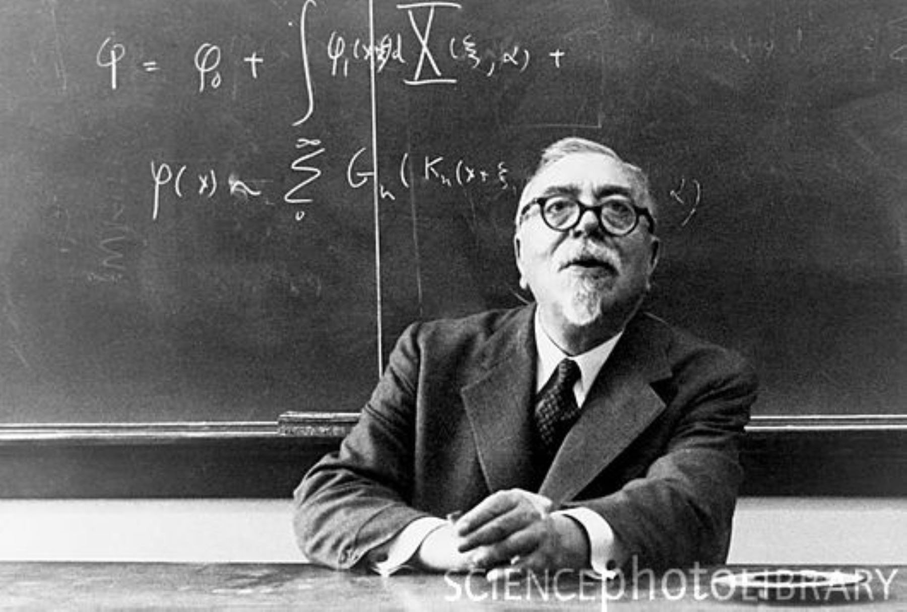

À propos de Norbert Wiener
Norbert Wiener (1894-1964) était un mathématicien américain qui a créé la cybernétique, une science qui étudie comment les êtres vivants et les machines communiquent et se contrôlent. Ses recherches ont permis de mieux comprendre des domaines comme l'intelligence artificielle, la robotique et les systèmes automatisés. Il a aussi réfléchi aux impacts éthiques des nouvelles technologies, en s'interrogeant sur la place de l'homme face aux machines. Aujourd'hui, ses travaux influencent encore de nombreux domaines scientifiques et technologiques.
Qui était Norbert Wiener ?
Norbert Wiener était un chercheur et mathématicien américain, né en 1894, qui a marqué l'histoire de la science par ses nombreuses contributions. Il est considéré comme le père de la cybernétique, mais il a également travaillé sur la théorie des probabilités et la statistique. Wiener a étudié à Harvard et à Cambridge, et ses travaux ont été essentiels pour la création des premiers ordinateurs. Il a été l'un des premiers à comprendre l'importance des machines capables d'apprendre et de s’adapter. En plus de ses travaux scientifiques, il a aussi écrit des livres de réflexion sur la place de l'homme dans un monde de plus en plus dominé par la technologie.
Les citations célèbres de Norbert Wiener
Norbert Wiener a laissé des citations qui continuent d'influencer la réflexion sur la technologie et l'humanité. Voici quelques-unes de ses plus célèbres :
"Les hommes doivent être responsables de la technologie qu'ils créent."
Cette citation met en lumière la vision de Wiener sur la nécessité de prendre en compte les conséquences des avancées technologiques.
"Le but de la cybernétique n'est pas de comprendre la machine, mais d'aider à comprendre l'homme."
Ici, Wiener rappelle que la cybernétique, bien qu'elle étudie aussi les machines, doit avant tout nous aider à mieux comprendre l’être humain et ses interactions sociales.